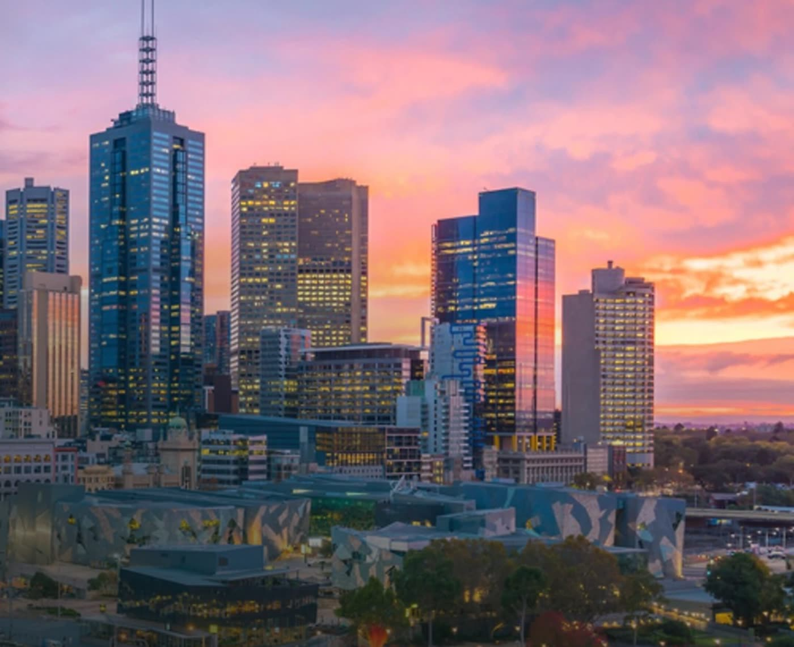
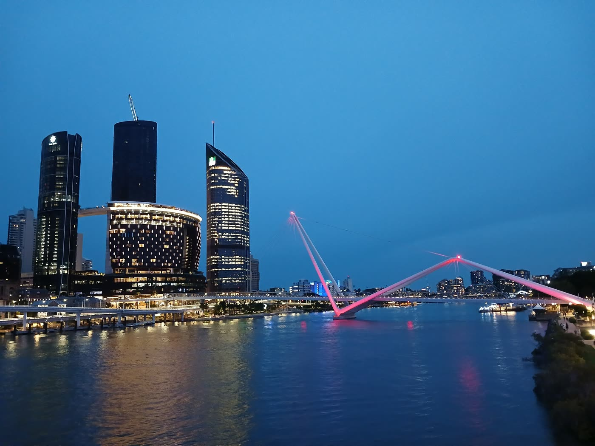
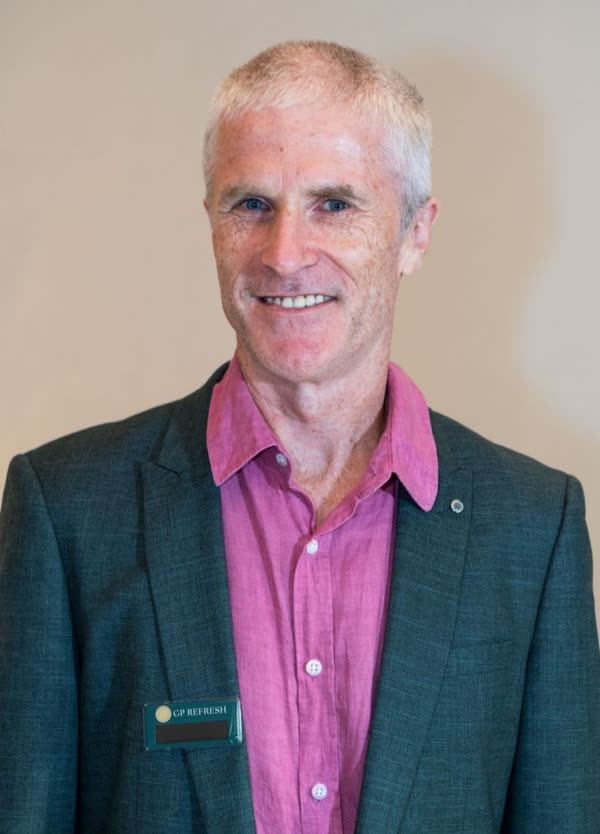
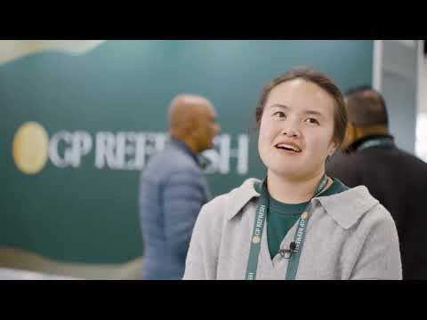
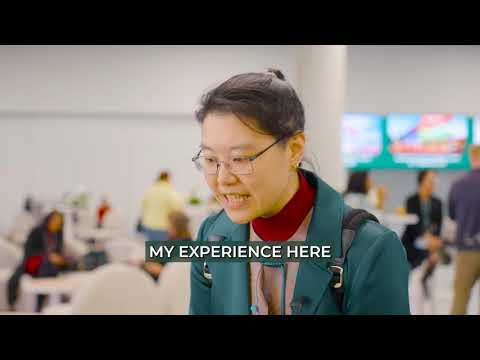
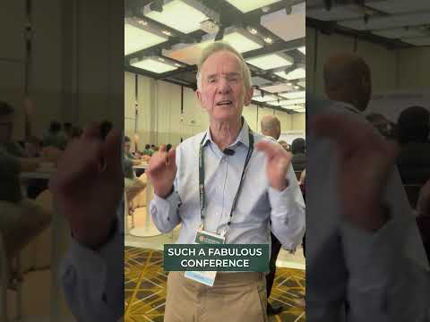
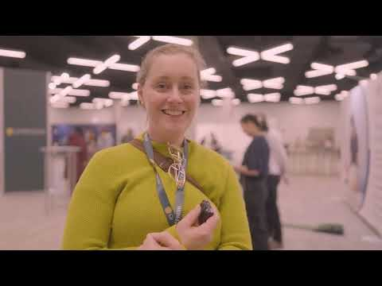
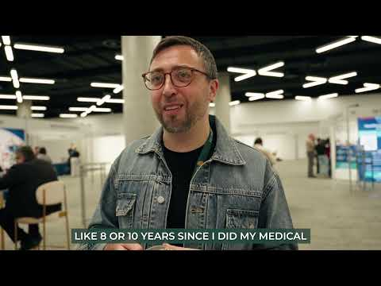
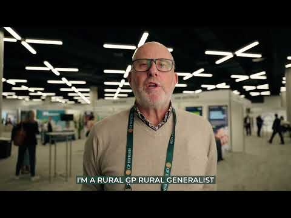

Up to 53 CPD hours
Accredited across RACGP and ACRRM, with up to 80 CME credits for RNZCGP members.
GP Refresh · The Global Family Doctors Congress
Leading clinicians take a 1-hour lecture and distil it into a 6-minute TED-style talk. Each one covers what GPs need to know, with a clear learning outcome and nothing you don't need.
Learn today. Apply in practice tomorrow.
Why GPs choose GP Refresh
Accredited across RACGP and ACRRM, with up to 80 CME credits for RNZCGP members.
70+ clinical topics and learning outcomes across the length and breadth of General Practice.
Independent, evidence-based education with no commercial influence over what you learn.
Celebrate General Practice with fellow GPs on Saturday night.
Swipe →
Upcoming Congresses


Swipe for all 5 Congresses →
Accredited CPD
up to53

Accredited CPD provider. Up to 53 CPD hours across educational activities, reviewing performance and measuring outcomes.

Accredited CPD provider for rural and remote GPs.

Up to 80 CME credits for New Zealand GPs.
Swipe →
Scientific Committee

Editor, Murtagh's General Practice 9th Ed.

Past RACGP President

Past RACGP Vice-President

Specialist GP

Specialist GP
Swipe →
Delegate stories

Watch
Watch
Watch
Watch
Watch
WatchSwipe for more stories →
Group discounts end 30 December
Bring more GPs and save more, up to 65% off every Congress Pass.